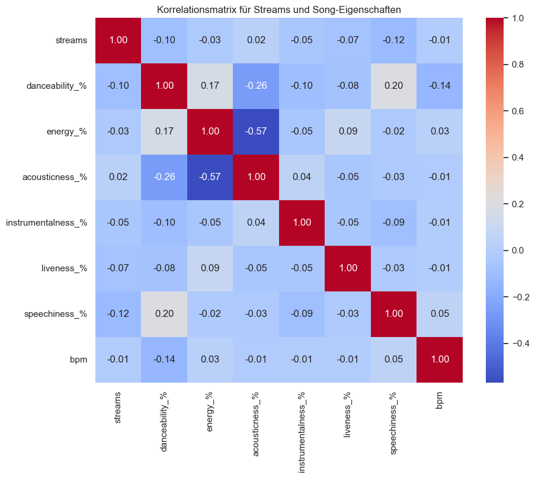

5 Datenexploration
In diesem Kapitel werden verschiedene Aspekte des angereicherten Datensatzes der meistgestreamten Songs 2023 untersucht. Ziel hierbei ist weniger die visuelle Darstellung sondern es geht eher darum herauszufinden, welche Merkmale Einfluss auf die Popularität eines Songs haben.
5.1 Verwendete Werkzeuge und Bibliotheken
5.2 Vorgehen
Das Ziel dieser Analyse ist wie mehrfach schon erwähnt eine Art Geheimformel für einen erfolgreichen Song herauszufinden.
Dafür habe ich zuerst die Verteilung musikalischen Merkmale der meistgestreamtesten Songs auf Spotify angeschaut. Dies habe ich mit der python-Bibliothek seaborn gemacht, da es hierbei noch nicht um eine ansprechende Visualisierung geht und ich diese Darstellung mit seaborn leichter finde als mit altair. In den folgenden Plots sind die Anzahl der Songs mit der jeweiligen Ausprägung des musikalischen Merkmals zu sehen. Als Maßstab habe ich hier die Anzahl der Songs genommen, da der Datensatz bereits die erfolgreichsten Songs im Jahre 2023 enthält.

Um trotzdem Auffälligkeiten zwischen der Anzahl der Streams und den musikalischen Merkmalen zu finden habe ich eine Hetmap erstellt. Diese enthält wie Sie unten sehen die einzelenen musikalischen merkmale und als label die Streams.

Natürlich habe ich mir auch noch die anderen Merkmale angschaut mithilfe der value_counts() builtin funktion von Pandas habe ich die Anzahl der Top-Songs nach der Tonart und des Keys angeschaut:
Tonart
| mode | Anzahl der Top-Songs |
|---|---|
| Major | 445 |
| Minor | 351 |
Key
| key | Anzahl der Top-Songs |
|---|---|
| C# | 114 |
| G | 87 |
| G# | 85 |
| F | 81 |
| B | 76 |
| D | 74 |
| A | 71 |
| F# | 68 |
| E | 55 |
| A# | 55 |
| D# | 30 |
Danach bin ich weg von den musikalischen Merkmalen und hin zu den zeitlichen und geografischen. Wann ist der beste Zeitpunkt ein Song zu releasen? Aus welchem land kommen die meisten Top-Künstler? Auch hier konnte ich mit der pandas builtin value_counts() wichtige erste Informationen sammeln:
Releasezeipunkt
| released_month | Anzahl der Top-Songs |
|---|---|
| 5 | 112 |
| 1 | 112 |
| 6 | 75 |
| 3 | 69 |
| 11 | 66 |
| 12 | 63 |
| 4 | 62 |
| 10 | 58 |
| 9 | 48 |
| 7 | 47 |
| 2 | 45 |
| 8 | 39 |
Anzahl der Künstler nach Künstlerland
| artist_country | Anzahl der Künstler |
|---|---|
| United States | 354 |
| Puerto Rico | 62 |
| United Kingdom | 57 |
| South Korea | 54 |
| Canada | 43 |
| Colombia | 36 |
| England | 30 |
| Mexico | 28 |
| Brazil | 16 |
| Argentina | 12 |
5.3 Ergebnisse der Exploration
Wie in den Histogrammen und in der Heatmap zu sehen ist, haben viele Top-Songs ähnliche Merkmalsausprägungen. Besonders stechen diese rechtschiefen Verteilungen aus:
- speechiness
- instrumentalness
Aber auch die eher Normalverteilten Merkmale sollte man beachten:
- energy
- danceability
Auch bei der Tonart und des keys konnte ich auffälligkeiten feststellen, Die meisten Top-Songs haben die Tonart Major und den Key C#
Der Releasezeitpunkt sollte auch ordentlich durchdacht werden. Im Janaur und Mai werden die meisten Songs relesed im August wurden fast 3 mal weniger Songs released.
Eine weitere Interessante Information ist, dass mit Abstand die meisten Top künstler aus den USA kommen
Mit diesen Erkenntnissen kann ich nun anprechende Visualisierungen gestalten, wie ich das gemacht habe erfahren Sie im nächsten Kapitel.